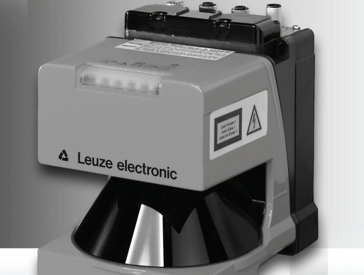
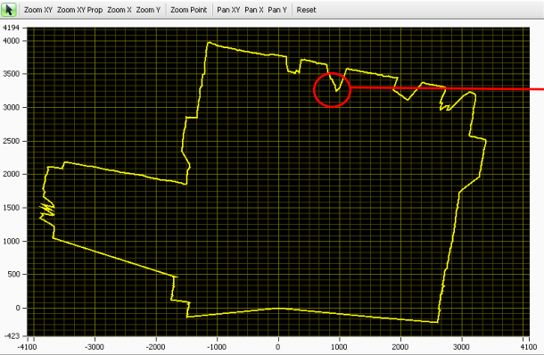
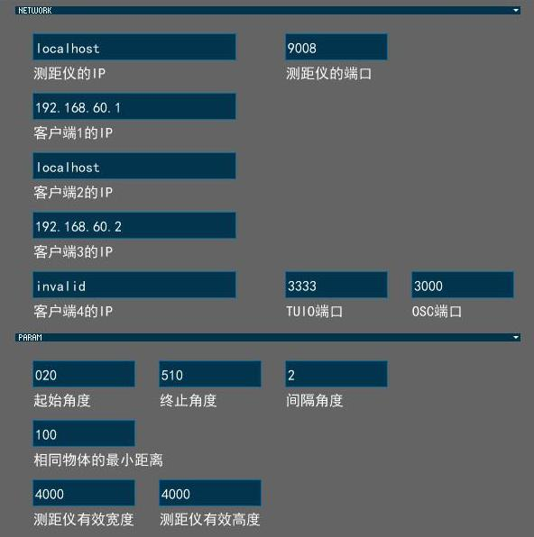
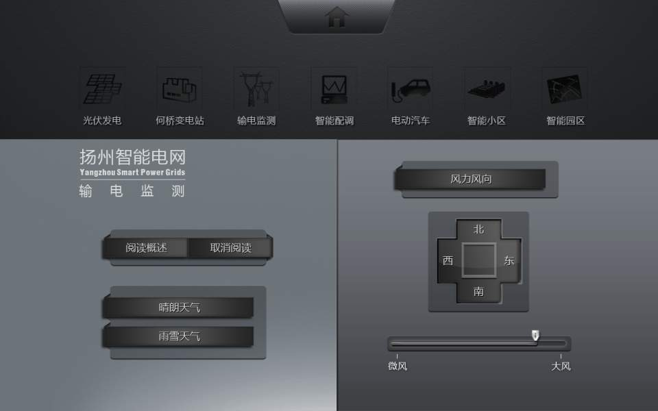
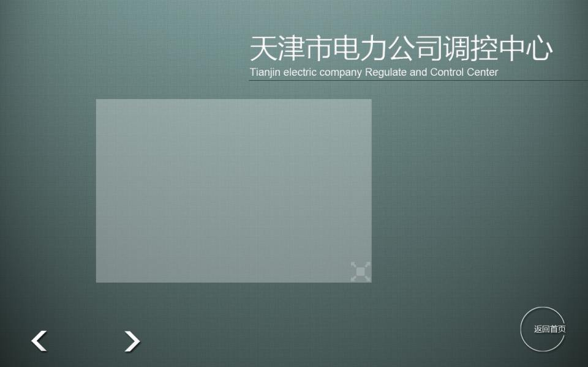
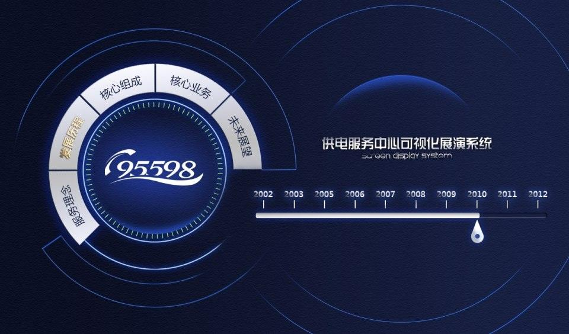

Portfolio
2011 - 2013
Overview
Vinjn Zhang is an experienced Software Engineer with expertise in:
- Programming language C++ / Java / Python / Javascript.
- Windows / Android development.
- OpenGL 3D graphics / OpenCV computer vision / Kinect interaction.
- Processing / openFrameworks / Cinder.
- Augmented Reality / Multi-touch solution / Interactive LED installation.
AirScan - Laser Scanner - Multi-touch
AirScan is a project of CRE Imagination, it is a large-scale touchless multi-touch system. The hardware part is a laser scanner working at high-frequency. I am responsible for the software part, including socket communication, data analysis and TUIO message formatting.
The realtime data is provided in (degree, distance) pairs. I transform them into a boundary contour and leverage OpenCV to do image processing, contour detection, object extraction. The extracted objects are regarded as TUIO cursors, which can be used to manipulate the content presentation system on other computers.
AirScan is a complicated software with lots of parameters. In order to ease the headache for system setup, I developed another software to tune the parameters.
Shanghai Film Museum - Large scale multi-touch system
River of Dreams is made up of 55 multi-touch tables, which is a challenge for a stable and robust multi-touch system. The system is based on CCV (Core Community Vision), with lots of improvements and new features.

CRE Imagination hired me to add a brand new top-down tracking feature to CCV. I leveraged OpenCV and contour finding to achieve it. I also added multi-camera streaming and multi-threaded image processing to increase frame rate.

The user interface has been redesigned and only dependent on XML file, makes it easy to extend. Several new options have been implemented to survive the various lighting conditions in the musem.

Due to the high software quality and excellent performance, these tables have been running for several months without any crash and debugging.

Android - OSC Remote Controllers
I made several Android application for CRE Imagination. The introdution of Android devices has opened a new opportunity to interation. They are used as a controller of remote media presenting system. The buttons and sliders will send custom OSC event to remote server.
Besides the useful OSC messaging, I also brings TUIO protocol to the controller. Since the device supports more than two fingers simultaneously, the finger coordinates will be transformed to TUIO cursors and sent to remote server. By this way we can rotate and scale pictures displayed by remote computers.
In order to make the development process more smoothly, I designed and implemented a series of Java classes. After using the framework, my team members (two) can create new software without deep knowledge about Android platform.
Nike - FOS Faceoff interactive treadmill
FOS Faceoff is an event of Nike made up of 10 treadmills. I co-operated with Super Nature Design to complete this task. I am responsible for all the softwares, including the scoreboard which display the time and score of each player, the panel behind each player and the login system.

The panel is a realtime visualization system which shows the speed of each treadmill. I use openFrameworks and OpenGL to render several smooth particles, the faster the player runs, the bigger and faster the particle become.

I use three computers to deploy the three softwares, this way I can make the whole system more stable. Although they are separated, they use network to communicate. The protocol chosen is the industry standard - OSC (open-sound-control).

The following video represents the most beautiful moments of FOS Faceoff. Don't miss the explosive particle effect on the panel.
Nike - Flex Interactive LED
Nike Flex is an interactive LED installation that makes response to human movements in a small area. I co-operated with Super Nature Design to finish this installation. When there is no visitor around, it will display realtime animations.

The computer vision part is implemented by my sophiscated system - CamServer. It's programmed in C++, OpenCV. When CamServer detects human movements, the positions will be sent to the visualization client.

The client is implemented in Cinder and OpenGL. The parameter panel shows lots of values to be tuned. When the values make installtion looks perfect, they will be saved to disk.

Kinect - Fruit Ninja Experiment
I have developed a sophicated Kinect server which turns Kinect into a multi-touch device. This demo shows how to play Fruit Ninja with our hands, it supports two players and four hands at the same time.
Leap Motion - Fruit Ninja Experiment
Leap Motion is another famous human-computer interaction device. I made this experiment to benchmark its response time and stability. It's developed in C++ and the networking protocol is TUIO.